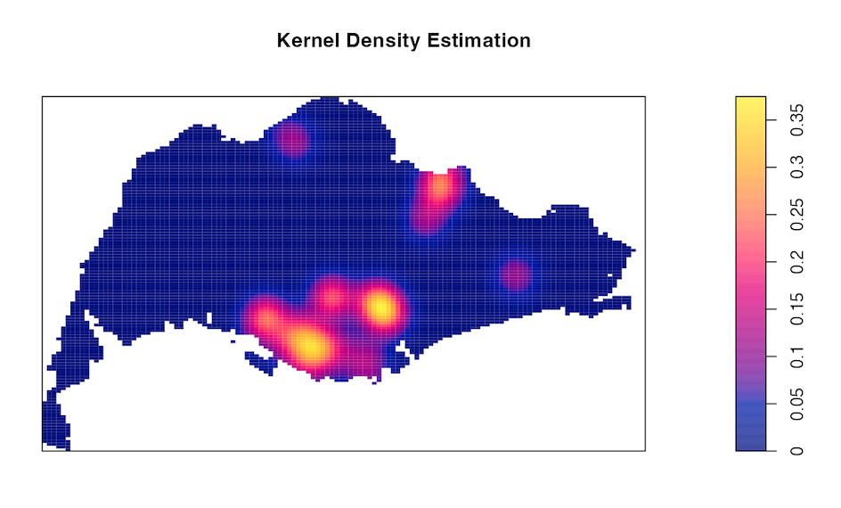
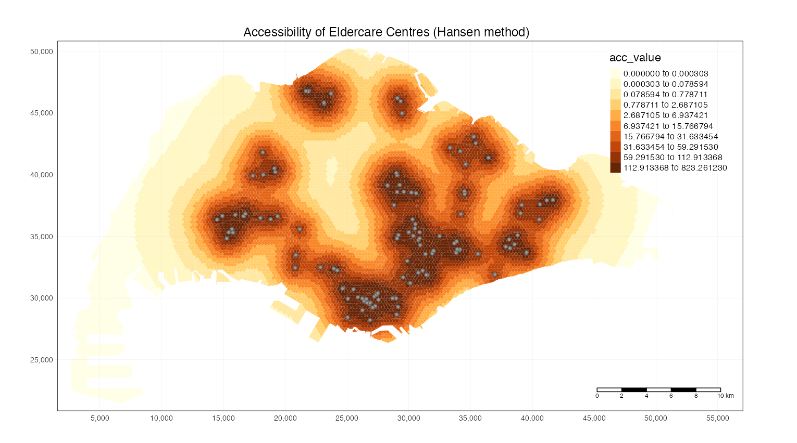

Project Overview
ELDANALYZE: Project Overview
1 The Issue: Singapore’s Ageing Population
Ageing Population:
Singapore’s population of 65 and older has been by 11.7% over the past decade. This trend is expected to persist with longer lifespans and a large proportion of the population falling within the age range.
Governmental Action:
To address this, the government is building more polyclinics and eldercare centres, diversifying their capabilities, and removing physical barriers to entry. It is also pushing for active ageing, encouraging elderly individuals to engage in social and physical activities to maintain a healthy lifestyle and mindset.
Our Aim:
Through our project, we hope to provide insights about the geographical distribution, accessibility and segmentation of eldercare centres in Singapore. With better understanding of the connection between Singapore’s elderly and the existing relevant facilities, the authorities could potentially be better informed when planning and making decisions for the urban landscape, rolling out plans that better support the elderly in Singapore.
2 Our Motivation
Singapore has experienced a demographic shift, with the proportion of the citizens aged 65 and older increasing by 11.7% from 10 years ago. (Source) Such a shift comes with a higher prevalence of chronic illness and disabilities. To address this, the Singaporean government has committed to building more polyclinics (Source) and eldercare centres (Source). Furthermore, they intend to diversify eldercare centres’ capabilities to also encompass basic health check-ups (Source) and they are working towards removing physical barriers to entry in current polyclinics. These measures are to ensure that healthcare remains physically accessible to any elderly person who needs it. This is especially important since geographical accessibility has been identified as one of the biggest contributing factors to polyclinic visitations (Source).
Furthermore, the government has been pushing for active ageing, where the elderly persons still engage in social and physical activity to maintain their health and well-being (Source). To this end, the Singaporean government has been trying to increase the number of active ageing centres (Source) to make it more accessible to seniors.
As such, our project aims to gain a deeper understanding of the geographical distribution of eldercare centres throughout Singapore. Currently, there have been studies conducted to understand the geographical accessibility of the polyclinics, as well as identify any potentially underserved regions. One study conducted in 2012 suggested that Sembawang and Jurong West were two underserved regions. (Source). With the rising elderly population, we must ensure that there are sufficient facilities to meet the growing demand in each region. A more recent study conducted in 2018 suggests that eldercare specifically is sparse in the Central Region. (Source)
Currently, there are studies to understand the geographical accessibility of the polyclinics, and identify any potentially underserved regions. Nonetheless, applications that help users derive a quick and comprehensive analysis of these facilities are not widely available.
With the rising elderly population, we must ensure that there are sufficient facilities to meet the growing demand in each region. A more recent study conducted in 2018 suggests that eldercare is sparse in the Central Region. We hope our app would be helpful towards planning to better support our beloved older generations.
3 The Data
| Data | Usage |
|---|---|
| Singapore Residents by Planning Area / Subzone, Age Group, Sex and Type of Dwelling, June 2023 |
|
| Master Plan 2019 Subzone Boundary (No Sea) |
|
| Eldercare Services |
|
| Pois Data Set |
|
| Community in Bloom (CIB) |
|
| CHAS clinics |
|
| HDB Buildings |
|
4 Approaches
For this project, we would like to facilitate the achievement of the following objectives to analyze the facilities for the elderly in Singapore:
Approach 1: Spatial Points Pattern Analysis – Kernel Density Estimation
To estimate the probability density function of a continuous random variable over a geographic area by placing a kernel function on each data point and summing up their contributions. This helps us visualise spatial patterns of data points.

Assumptions
Randomness
- In our spatial points pattern analysis, we assumed that the distribution of the various amenities is random and is not significantly constrained by networks such as roads and rivers. Given that the networks do not constrain persons from accessing the other amenities, we found that this assumption is justifiable.
Constant Density
- In our analysis, we also assumed that there are no significant disparities in the density of amenities in a given space. This was not necessarily true as there were regions with 0 amenities and others with a significant number. This assumption was made due to two reasons: constraints with regard to the Shiny app’s deployment and the unofficial nature of our data.
Approach 2: Accessibility Analysis
To assess the ease of reaching destinations from a given location, often using measures like travel time or distance, aiding urban planning and decision-making by identifying areas with varying levels of accessibility.

Assumptions
- Demand of services:
- In our analysis, we assumed that the spread of demand of services is determined by the spread of the elderly population across Singapore. However, we do not have access to data of the actual residences of each elderly to determine an accurate spread. Hence, we applied the following steps:
Determine the number of elderly in each subzone using the population data from the Singapore Residents by Planning Area / Subzone, Age Group, Sex and Type of Dwelling, June 2023 data set
Find the number of HDB in each hexagon and subzone, based on HDB Buildings data set
Find the number of elderly in each hexagon using the number of HDB in each hexagon relative to the number of HDB in the entire subzone, that is:
- Number of elderly in each hexagon = Number of HDB in the hexagon/Number of HDB in the subzone * Number of elderly in the subzone
- In our analysis, we assumed that the spread of demand of services is determined by the spread of the elderly population across Singapore. However, we do not have access to data of the actual residences of each elderly to determine an accurate spread. Hence, we applied the following steps:
- Capacity of Services - As we were unable to derive the exact capacity of each facility due to limited data on the internet, we assumed that the spread of supply of services (capacity at any point in time) based on the following features:
- Eldercare Centres: Based on an article
- Other facilities: Estimation based on the average size of these facilities
With access to more comprehensive data, we would be able to give a more accurate picture of the accessibility to the facilities in Singapore .
Approach 3: Geographical Segmentation
To divide our elderly population based on physical location, such as region, planning area, or subzone, allowing the government to tailor strategies to specific geographic areas.
4 Future Work
4.1 Spatial Points Pattern Analysis – Kernel Density Estimation:
Networks: Our work can be expanded to analyse the distribution of all the amenities with respect to the network to assess the accessibility of a given amenity from other amenities (e.g. if the eldercare centre is near a park) While we made the assumption that the network would not substantially affect the results, it would nonetheless be helpful to understand the impact of physical constraints on the accessibility of the various amenities.
4.2 Accessibility Analysis:
Inclination of Slopes: Our work can be further extended to assess the accessibility of different amenities while considering the inclination of slopes as staircases/slopes might pose a challenge for the elderly.
Interactive Plot: In addition, it would be better if we could produce an interactive plot for the analysis. This would allow users to easily identify areas that they are interested in by hovering over the area. However, due to the complexity of such plots, it significantly lengthens the loading time of the app. Hence, taking into consideration costs and benefits, we decided that using a static plot that is more appropriate at this juncture. With more resources in the future, it would be good if we could implement the interactive plot.
Availability of Data: As mentioned earlier, we made a few assumptions about the demand and capacity of the facilities. Thought they are arguably good estimates, they might not provide the most accurate representation of reality. Hence, we can improve in the future if we are given access to such comprehensive data.
4.3 Geographical Segmentation:
We can complete the visualisation of the geographical segmentation of the various eldercare facilities across Singapore based on the various accessibility scores. We can also consider the number of facilities as a possible variable.